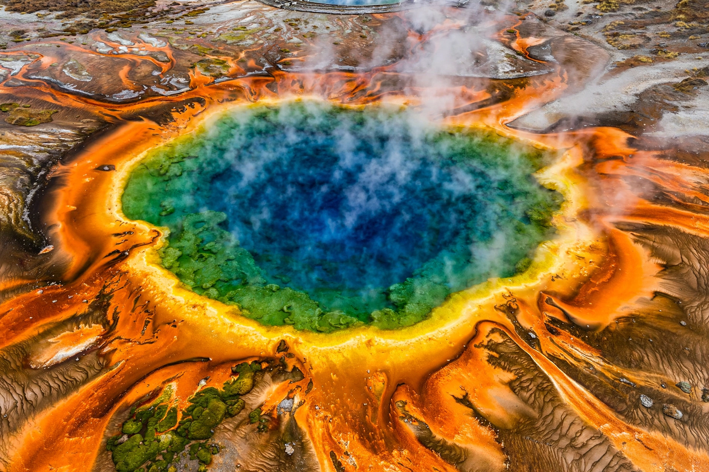

Archaea
From Wikipedia, the free encyclopedia
Archaea are a domain of single-celled microorganisms that, like bacteria, are prokaryotes without a nucleus, but differ from bacteria in their membrane chemistry, cell walls and gene-expression machinery — in several respects resembling eukaryotes more closely. They were recognised as a separate domain by Carl Woese and colleagues in 1977 using ribosomal RNA sequences.

[Image: Archaea from a hot spring: colourful microbial mats at Grand Prismatic Spring, Yellowstone]
Distinctive features
Archaeal membranes use ether-linked isoprenoid lipids, sometimes forming a single lipid monolayer, rather than the ester-linked fatty acids of bacteria and eukaryotes. Their cell walls lack peptidoglycan (some have pseudopeptidoglycan). Archaeal RNA polymerases and ribosomal proteins resemble the eukaryotic versions, and some archaea package DNA with histones.
Habitats and metabolism
Archaea were first known from extreme environments — hot springs, salt lakes, acidic waters and deep-sea vents — and some, the extremophiles, still hold records for growth at high temperature and acidity. They are now known to be abundant in ordinary oceans and soils. Methanogens, which produce methane, live in wetlands, sediments and animal guts.
Significance
Archaea are central to the study of life's origins and the origin of eukaryotes; the Asgard archaea discovered in the 2010s are the closest known prokaryotic relatives of eukaryotes. Enzymes from heat-loving archaea and other extremophiles are used in industry and in the polymerase chain reaction.